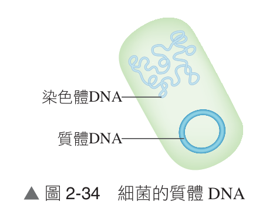

高中生物（全） 2-3 遺傳工程及其應用
觀念精講(一)
遺傳工程定義與重組 DNA 準備（第 1/10 頁）
💡 單元引言：
隨著分子生物學與現代生物技術的蓬勃發展，人類對基因如何調控生物性狀表現有了透徹的認識。有沒有可能透過人為技術精準操控或改造生物的基因，使生物展現出自然界中原本未曾具備的嶄新性狀，進而造福人類醫療與農業？這就是「遺傳工程」的劃時代使命！
一、遺傳工程（Genetic Engineering）的核心定義
1. 定義：透過人為操控、修改或改造生物的遺傳物質（DNA），使受體生物可以獲得外源遺傳訊息，進而表現出全新的性狀或生產特定生化產物。
2. 別稱：遺傳工程在實務與應用技術上亦常通稱為「基因工程」。
2. 別稱：遺傳工程在實務與應用技術上亦常通稱為「基因工程」。
二、製備重組 DNA 與基因轉殖技術
📌 (一) 製備重組 DNA 的三大核心準備
進行重組 DNA 技術前，研究人員必須預先備妥三大要素：目標基因、載體與特定酵素。
1. 目標基因（Target Gene）：
① 欲改造、表現或轉殖送入某一生物體內的特定功能基因。
② 科學家必須對該目標基因的核苷酸序列、調控機轉與轉譯產物具有清楚的了解。
③ 實例：若想利用細菌大量生產人類胰島素，則人類細胞染色體上的「人類胰島素基因」即為目標基因。
① 欲改造、表現或轉殖送入某一生物體內的特定功能基因。
② 科學家必須對該目標基因的核苷酸序列、調控機轉與轉譯產物具有清楚的了解。
③ 實例：若想利用細菌大量生產人類胰島素，則人類細胞染色體上的「人類胰島素基因」即為目標基因。
2. 載體（Vector）：
① 通常為具有自主複製能力的 DNA 分子，能攜帶目標基因進入宿主細胞並維持穩定表現。
② 最常用的載體是微生物的「質體（Plasmid）」。
① 通常為具有自主複製能力的 DNA 分子，能攜帶目標基因進入宿主細胞並維持穩定表現。
② 最常用的載體是微生物的「質體（Plasmid）」。
🔍 質體（Plasmid）的結構特性與操作優勢：
• 結構型態：質體常見於細菌等微生物，是獨立於擬核染色體以外的小段雙股環狀 DNA。
• 操作便利：質體分子量小、結構緊湊，在實驗室離心萃取與試管操作時不易斷裂，比龐大脆弱的染色體 DNA 方便操控得多。
• 自主複製：質體帶有獨立的複製起點（Ori），在宿主細胞內能獨立自行複製，使細菌分裂後子代皆能均勻帶有該質體。
• 基因表現：質體能順利利用宿主細胞的機制進行轉錄與轉譯，表現外源目標基因並合成目標蛋白質。
• 結構型態：質體常見於細菌等微生物，是獨立於擬核染色體以外的小段雙股環狀 DNA。
• 操作便利：質體分子量小、結構緊湊，在實驗室離心萃取與試管操作時不易斷裂，比龐大脆弱的染色體 DNA 方便操控得多。
• 自主複製：質體帶有獨立的複製起點（Ori），在宿主細胞內能獨立自行複製，使細菌分裂後子代皆能均勻帶有該質體。
• 基因表現：質體能順利利用宿主細胞的機制進行轉錄與轉譯，表現外源目標基因並合成目標蛋白質。

▲ 圖 2-34 細菌的質體 DNA（獨立於擬核染色體外的小型雙股環狀 DNA，🔍 點擊可放大檢視）